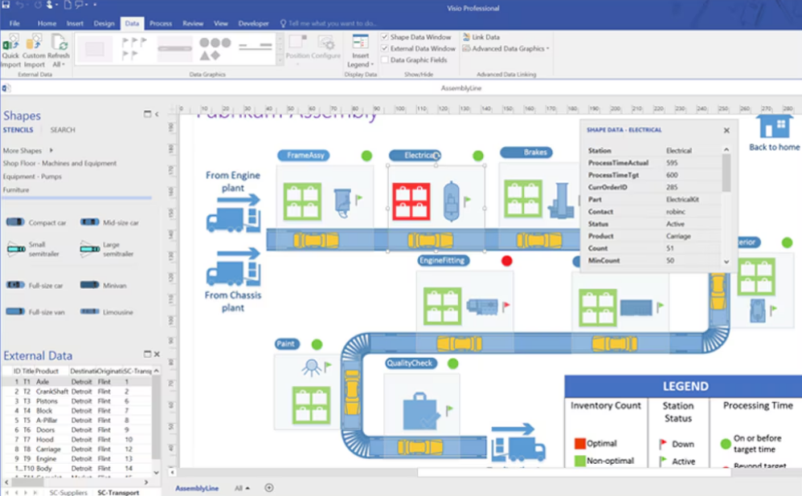

IBM Rational Rose on üks juhtivaid CASE tööriistu, mida kasutatakse tarkvara analüüsiks ja disainiks. Seda kasutatakse peamiselt objektorienteeritud analüüsi ja disaini jaoks, toetades UML diagramme ja muud arhitektuuride loomist.
Mis saab teha: Tööriista abil saab luua visuaalseid mudeleid, nagu klassidiagrammid, järjestuse diagrammid ja tegevusdiagrammid, et dokumenteerida ja analüüsida tarkvara struktuuri enne arendamist. See aitab tagada, et süsteemide arhitektuur on õigesti kavandatud.

Microsoft Visio on diagrammitöötlusprogramm, mida kasutatakse süsteemi arhitektuuri ja protsesside modelleerimiseks. Visio on suurepärane tööriist, et luua andmestruktuuride, töövoogude ja tarkvarasüsteemide visuaalseid mudeleid.
Mis saab teha: Visio võimaldab kasutajatel luua erinevaid diagramme, sealhulgas andmebaasi ja äriprotsesside diagramme, samuti UML ja ERD (Entity Relationship Diagram) mudeleid. See on kasulik tööriist, et visualiseerida, kuidas süsteemid töötavad ja millised komponendid neid moodustavad.

IBM Rational Rose kohta leidsin infot siit
Microsoft Visio kohta leidsin infot siit
Uppercase vahendite kohta leidsin infot siit